Implementacion Del ejercicio#
Importacion de librerias#
import pandas as pd
import matplotlib.pyplot as plt
import numpy as np
import seaborn as sns
from scipy.stats import shapiro, normaltest, kstest
Funciones usadas#
def Summary(data, sheet):
print(f"Hoja: {sheet}")
# Crear la tabla de resumen
resumen = {
"Cantidad de filas": data.shape[0],
"Cantidad de columnas": data.shape[1],
"Datos faltantes": data.isnull().sum().sum(),
"Filas duplicadas": data.duplicated().sum()
}
# Convertir el resumen en un DataFrame
ResumenHoja = pd.DataFrame(resumen, index=["Resumen"])
print("\nResumen:")
display(ResumenHoja)
print("\nEncabezado:")
display(data.head())
def analizar_categoricas(df):
resultados = []
# Detectar variables categóricas (object, category o booleanas)
categoricas = df.select_dtypes(include=['object', 'category', 'bool']).columns
for col in categoricas:
conteo = df[col].value_counts(dropna=False)
proporcion = df[col].value_counts(normalize=True, dropna=False)
nulos = df[col].isna().sum()
# Tomamos la categoría más frecuente
categoria_moda = conteo.index[0] if not conteo.empty else None
frecuencia_moda = conteo.iloc[0] if not conteo.empty else None
porcentaje_moda = proporcion.iloc[0] if not conteo.empty else None
resultados.append({
"variable": col,
"cantidad_categorias": df[col].nunique(dropna=False),
"categoria_mas_frecuente": categoria_moda,
"frecuencia_mas_frecuente": frecuencia_moda,
"porcentaje_mas_frecuente": porcentaje_moda,
"nulos": nulos,
"porcentaje_nulos": nulos / len(df)
})
return pd.DataFrame(resultados).sort_values(by="cantidad_categorias", ascending=False)
def Graficar_Categoricas(df, tipo="barra"):
# Detectar variables categóricas
categoricas = df.select_dtypes(include=['object', 'category', 'bool']).columns
resultados = {}
if len(categoricas) == 0:
print("No se detectaron variables categóricas en el DataFrame.")
return
for col in categoricas:
conteo = df[col].value_counts(dropna=False) # incluir NaN si hay
resultados[col] = conteo
if tipo == "barra":
plt.figure(figsize=(6,4))
conteo.plot(kind="bar", color="skyblue", edgecolor="black")
plt.title(f"Frecuencia de {col}")
plt.xlabel(col)
plt.ylabel("Frecuencia")
plt.xticks(rotation=45)
plt.tight_layout()
plt.show()
elif tipo == "pastel":
plt.figure(figsize=(6,6))
conteo.plot(kind="pie", autopct='%1.1f%%',
colors=plt.cm.Set3.colors, startangle=90)
plt.title(f"Distribución de {col}")
plt.ylabel("")
plt.tight_layout()
plt.show()
else:
raise ValueError("El parámetro 'tipo' debe ser 'barra' o 'pastel'.")
return resultados
def resumen_numericas(df):
# Seleccionar columnas numéricas
numericas = df.select_dtypes(include=['int64', 'float64', 'int32', 'float32']).columns
if len(numericas) == 0:
print("No se detectaron variables numéricas en el DataFrame.")
return None
# Usamos describe() y agregamos info adicional
resumen = df[numericas].describe().T # Transpuesto para mayor claridad
resumen["varianza"] = df[numericas].var()
resumen["mediana"] = df[numericas].median()
return resumen
def graficar_numericas(df):
# Detectar variables numéricas
numericas = df.select_dtypes(include=['int64', 'float64', 'int32', 'float32']).columns
if len(numericas) == 0:
print("No se detectaron variables numéricas en el DataFrame.")
return
for col in numericas:
plt.figure(figsize=(12,4))
# Histograma
plt.subplot(1,2,1)
df[col].hist(bins=20, color="skyblue", edgecolor="black")
plt.title(f"Histograma de {col}")
plt.xlabel(col)
plt.ylabel("Frecuencia")
# Boxplot
plt.subplot(1,2,2)
plt.boxplot(df[col].dropna(), vert=False, patch_artist=True,
boxprops=dict(facecolor="lightgreen", color="black"),
medianprops=dict(color="red"))
plt.title(f"Boxplot de {col}")
plt.xlabel(col)
plt.tight_layout()
plt.show()
def prueba_normalidad(df, alpha=0.05):
resultados = []
# Detectar variables numéricas
numericas = df.select_dtypes(include=[np.number]).columns
for col in numericas:
serie = df[col].dropna()
if len(serie) < 8: # muy pocas muestras → no confiable
resultados.append({
"variable": col,
"n_muestras": len(serie),
"shapiro_p": np.nan,
"dagostino_p": np.nan,
"ks_p": np.nan,
"es_normal (alpha=0.05)": "Muestra insuficiente"
})
continue
# Shapiro-Wilk (solo si n <= 5000, más grande no recomendado)
stat_shapiro, p_shapiro = shapiro(serie) if len(serie) <= 5000 else (np.nan, np.nan)
# D’Agostino y Pearson
stat_dagostino, p_dagostino = normaltest(serie)
# Kolmogorov-Smirnov contra normal estándar
stat_ks, p_ks = kstest(
(serie - serie.mean()) / serie.std(ddof=0), 'norm'
)
# Veredicto final
es_normal = (
(np.isnan(p_shapiro) or p_shapiro > alpha) and
(p_dagostino > alpha) and
(p_ks > alpha)
)
resultados.append({
"variable": col,
"n_muestras": len(serie),
"shapiro_p": p_shapiro,
"dagostino_p": p_dagostino,
"ks_p": p_ks,
"es_normal (alpha=0.05)": es_normal
})
return pd.DataFrame(resultados).sort_values(by="es_normal (alpha=0.05)", ascending=False)
def mapa_calor_nulos(df, figsize=(10,6), cmap="viridis"):
plt.figure(figsize=figsize)
sns.heatmap(df.isnull(),
cbar=False,
cmap=cmap,
yticklabels=False)
plt.title("Mapa de calor de valores faltantes", fontsize=14)
plt.show()
def contar_na_numericas(df):
# Detectar variables numéricas
numericas = df.select_dtypes(include=['int64', 'float64', 'int32', 'float32']).columns
if len(numericas) == 0:
print("No se detectaron variables numéricas en el DataFrame.")
return None
# Contar NAs en cada variable numérica
na_counts = df[numericas].isna().sum()
return na_counts
Cargado y revision inicial de los datos#
df = pd.read_csv("Base_imputacion_mixta_1000.csv")
Summary(df,"Datos")
Hoja: Datos
Resumen:
| Cantidad de filas | Cantidad de columnas | Datos faltantes | Filas duplicadas | |
|---|---|---|---|---|
| Resumen | 1000 | 12 | 1850 | 0 |
Encabezado:
| fecha | sexo | ciudad | nivel_educativo | segmento | estado_civil | edad | altura_cm | ingresos | gasto_mensual | puntuacion_credito | demanda | |
|---|---|---|---|---|---|---|---|---|---|---|---|---|
| 0 | 2024-01-01 | F | Medellín | NaN | B | Unión libre | 19.0 | 161.821754 | 3574.753806 | 1832.731832 | 640.465372 | 119.202995 |
| 1 | 2024-01-02 | F | Barranquilla | NaN | B | NaN | 52.0 | 167.819566 | 3163.626815 | NaN | 533.108430 | 124.457874 |
| 2 | 2024-01-03 | M | Bogotá | Secundaria | B | Soltero/a | 38.0 | 165.756219 | 2765.672259 | 1219.535074 | 491.016910 | NaN |
| 3 | 2024-01-04 | F | Bogotá | NaN | B | Casado/a | 57.0 | 160.642670 | 4320.397345 | 1908.324816 | NaN | 129.426792 |
| 4 | 2024-01-05 | M | Cali | Técnico | B | Soltero/a | 67.0 | 151.402909 | NaN | 1887.385697 | 610.213994 | 133.916319 |
Observamos prescencia de datos faltantes, en total 1850, ademas de 1000 filas y 12 columnas con 0 filas duplicadas, a continuacion revisaremos la adecuada lectura de los tipos de datos
df.info()
<class 'pandas.core.frame.DataFrame'>
RangeIndex: 1000 entries, 0 to 999
Data columns (total 12 columns):
# Column Non-Null Count Dtype
--- ------ -------------- -----
0 fecha 1000 non-null object
1 sexo 980 non-null object
2 ciudad 950 non-null object
3 nivel_educativo 900 non-null object
4 segmento 800 non-null object
5 estado_civil 650 non-null object
6 edad 970 non-null float64
7 altura_cm 920 non-null float64
8 ingresos 880 non-null float64
9 gasto_mensual 750 non-null float64
10 puntuacion_credito 500 non-null float64
11 demanda 850 non-null float64
dtypes: float64(6), object(6)
memory usage: 93.9+ KB
Observamos que todos los datos están adecuadamente detectados excepto por fecha que está siendo detectada como un object
df["fecha"] = pd.to_datetime(df["fecha"], format="%Y-%m-%d")
Analisis exploratorio de datos#
analizar_categoricas(df)
| variable | cantidad_categorias | categoria_mas_frecuente | frecuencia_mas_frecuente | porcentaje_mas_frecuente | nulos | porcentaje_nulos | |
|---|---|---|---|---|---|---|---|
| 1 | ciudad | 6 | Bogotá | 307 | 0.307 | 50 | 0.05 |
| 4 | estado_civil | 5 | NaN | 350 | 0.350 | 350 | 0.35 |
| 2 | nivel_educativo | 5 | Secundaria | 317 | 0.317 | 100 | 0.10 |
| 3 | segmento | 4 | B | 457 | 0.457 | 200 | 0.20 |
| 0 | sexo | 3 | F | 518 | 0.518 | 20 | 0.02 |
Graficar_Categoricas(df)
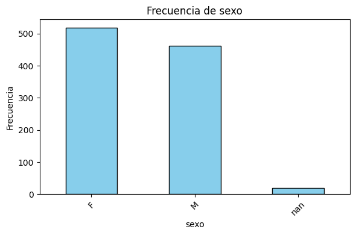
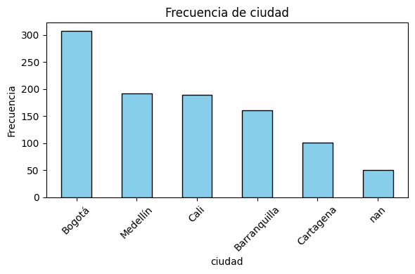
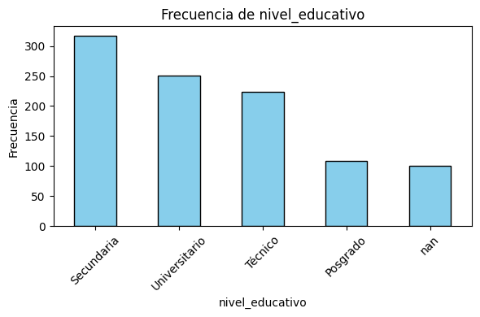
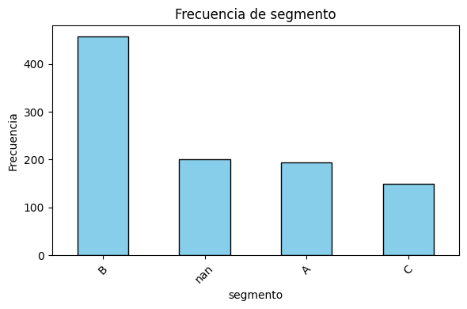
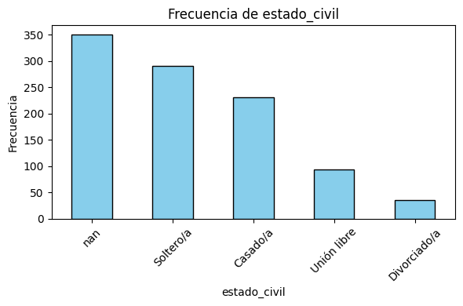
{'sexo': sexo
F 518
M 462
NaN 20
Name: count, dtype: int64,
'ciudad': ciudad
Bogotá 307
Medellín 192
Cali 189
Barranquilla 161
Cartagena 101
NaN 50
Name: count, dtype: int64,
'nivel_educativo': nivel_educativo
Secundaria 317
Universitario 251
Técnico 224
Posgrado 108
NaN 100
Name: count, dtype: int64,
'segmento': segmento
B 457
NaN 200
A 194
C 149
Name: count, dtype: int64,
'estado_civil': estado_civil
NaN 350
Soltero/a 290
Casado/a 231
Unión libre 93
Divorciado/a 36
Name: count, dtype: int64}
resumen_numericas(df)
| count | mean | std | min | 25% | 50% | 75% | max | varianza | mediana | |
|---|---|---|---|---|---|---|---|---|---|---|
| edad | 970.0 | 42.861856 | 14.621382 | 18.000000 | 30.000000 | 43.000000 | 55.000000 | 69.000000 | 2.137848e+02 | 43.000000 |
| altura_cm | 920.0 | 167.760096 | 9.275530 | 140.000000 | 161.488768 | 167.714614 | 173.999069 | 195.766921 | 8.603545e+01 | 167.714614 |
| ingresos | 880.0 | 3681.294745 | 1079.326096 | 487.662547 | 2999.416229 | 3669.620507 | 4375.093656 | 7016.246936 | 1.164945e+06 | 3669.620507 |
| gasto_mensual | 750.0 | 1687.810749 | 582.070174 | 100.000000 | 1309.239768 | 1676.193764 | 2063.260990 | 3532.593603 | 3.388057e+05 | 1676.193764 |
| puntuacion_credito | 500.0 | 599.077500 | 79.828186 | 373.657944 | 544.467843 | 599.692595 | 653.345068 | 823.539585 | 6.372539e+03 | 599.692595 |
| demanda | 850.0 | 160.305759 | 25.357794 | 99.875828 | 139.505538 | 160.721251 | 181.100754 | 222.093047 | 6.430177e+02 | 160.721251 |
contar_na_numericas(df) / len(df)
edad 0.03
altura_cm 0.08
ingresos 0.12
gasto_mensual 0.25
puntuacion_credito 0.50
demanda 0.15
dtype: float64
graficar_numericas(df)
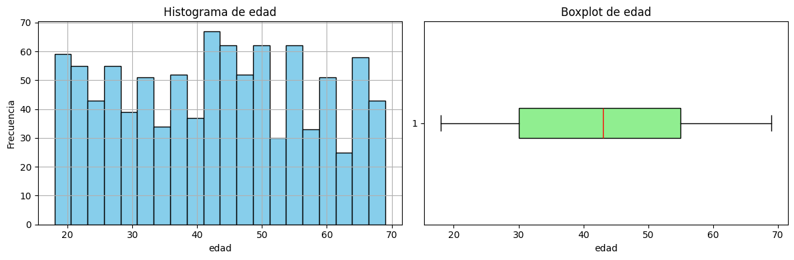
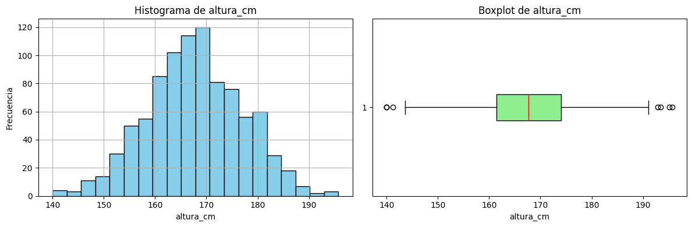
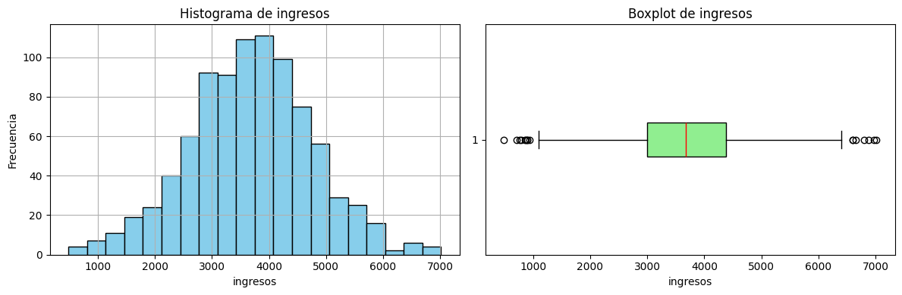
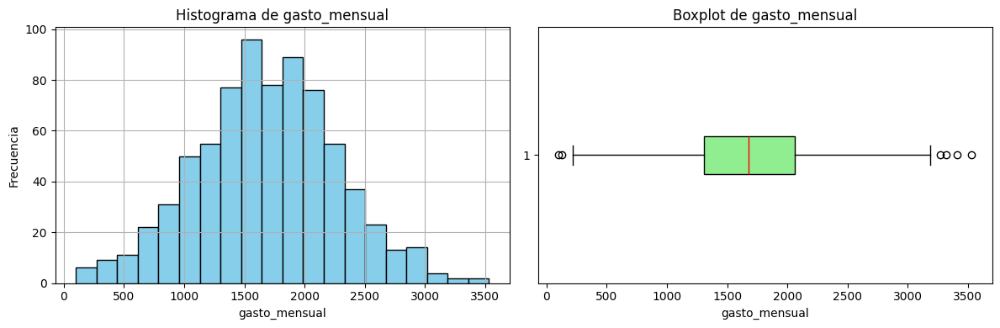
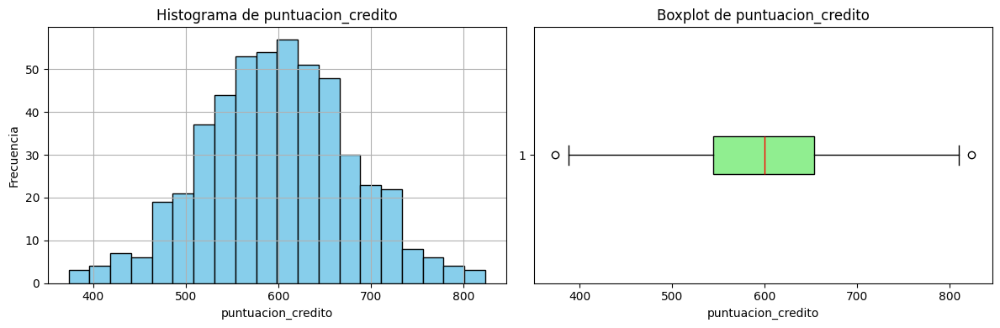
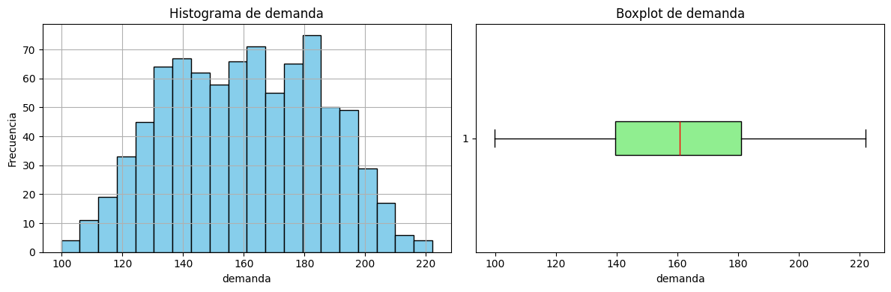
mapa de calor de los valores faltantes
mapa_calor_nulos(df)
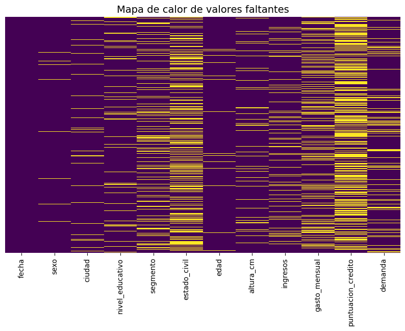
prueba_normalidad(df)
| variable | n_muestras | shapiro_p | dagostino_p | ks_p | es_normal (alpha=0.05) | |
|---|---|---|---|---|---|---|
| 1 | altura_cm | 920 | 5.911472e-01 | 7.946680e-01 | 0.725425 | True |
| 2 | ingresos | 880 | 3.244752e-01 | 6.173557e-01 | 0.899760 | True |
| 3 | gasto_mensual | 750 | 6.752081e-01 | 8.791065e-01 | 0.961382 | True |
| 4 | puntuacion_credito | 500 | 9.405074e-01 | 9.651871e-01 | 0.997282 | True |
| 0 | edad | 970 | 1.132185e-15 | 9.628678e-93 | 0.000063 | False |
| 5 | demanda | 850 | 1.129628e-07 | 1.958694e-19 | 0.025404 | False |